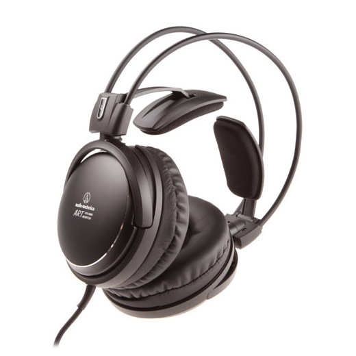

Audio-Technica ATH-A900X
Описание
Закрытые динамические наушники ATH-A900X — это обновлённая версия модели ATH-A900. Эти наушники Audio-Technica имеют акустические характеристики аудиофильского уровня с превосходным глубоким басом и передачей вокала, не имеющей равных в своем классе. Hi-Fi звучание достигается за счет крупных 53-мм драйверов и системы демпфирования Double Air. Наушники оснащены инновационным саморегулирующимся оголовьем, которое гарантирует Вам долгие часы удивительно комфортного прослушивания.
Технические характеристики
| Внешний вид и конструкция | |
|---|---|
| Прилегание к ушам | Охватывающие |
| Основной Цвет | Чёрный |
| Материал амбушюр | Кожаные |
| Складные | Нет |
| Акустические характеристики | |
| Тип звукоизлучателя | Динамический |
| Тип наушников | Закрытые |
| Частотный диапазон | 5 — 40000 Гц |
| Чувствительность | 100 дБ |
| Сопротивление | 42 Ом |
| Проводное подключение | |
| Наличие провода | Проводные |
| Съемный кабель | Hет |
| Штекер | Джек 3.5 + переходник 6.3 мм |
| Тип кабеля | Прямой односторонний |
| Метраж кабеля | 3 м |
| Функции и управление | |
| Шумоизоляция | С частичной шумоизоляцией |
| Активная компенсация шумов | Нет |
| Дополнительная информация | |
| Вес | 290 |
| Назначение | Для дома |
Особенности
- Аудиофильские наушники с алюминиевым корпусом
- Большие 53-мм драйверы для высококачественного звука
- Закрытая конструкция с системой демпфирования Double Air для глубокого баса
- Звуковая катушка с CCAW обмоткой
- Вибростойкое саморегулирующееся оголовье 3D Wing Support Housing обеспечивает комфортную посадку
- Чрезвычайно удобные крупные и мягкие амбушюры
- Высококачественный OFC-кабель (бескислородная медь) в прочной тканевой оплетке
- Сделано в Японии
Комплект поставки
- Наушники Audio-Technica ATH-A900X
- Адаптер 6,3 мм